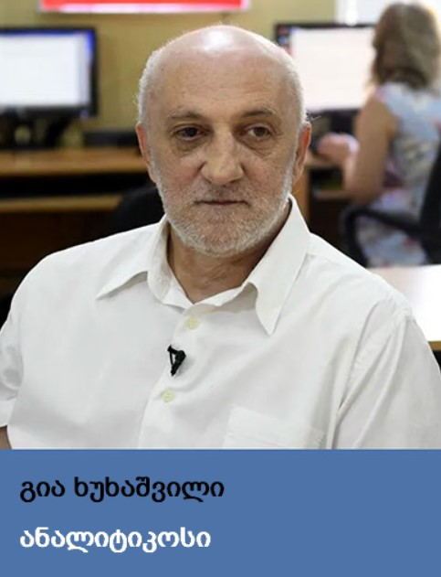

გრძელვადიანი სტაბილურობა თუ მოკლე ვადაში მიღებული სარგებელი
რატომ არ უნდა იყოს საქართველოს ეკონომიკა რუსეთზე დამოკიდებული?

რომელია უმჯობესი, გრძელვადიანი სტაბილურობა თუ მოკლე ვადაში მიღებული სარგებელი? კითხვა, რომელიც საქართველო- რუსეთის ეკონომიკურ ურთიერთობაზე საუბრისას ისმის. წლების გამოცდილებამ აჩვენა, რომ რაც მეტია რუსეთის ბაზარზე დამოკიდებულება, მით მზარდია რისკი, ერთ დღესაც მიღებული „სარგებელი“ დიდ დანაკარგად გადაიქცეს. ამის ნათელი მაგალითია, 2006 წელს რუსეთის მიერ საქართველოსთვის დაწესებული ემბარგო და მიღებული ზიანი.
„მეგობრული“ ქვეყნის მიერ გადადგმულმა აღნიშნულმა ნაბიჯმა, ქართველი მწარმოებლების დიდი ნაწილი ფაქტობრივად, გაკოტრების წინაშე დააყენა. იმ დროისთვის რუსეთის წილი საქართველოს ექსპორტში 18% იყო, რაც ფაქტობრივად, განულდა. 2008-2012 წლებში საგარეო ვაჭრობაში რუსეთის წილი 2%-საც არ აღემატებოდა.
როგორ იცვლებოდა ბოლო 10 წლის განმავლობაში საქართველოს ეკონომიკაში რუსეთის წილი?
2014 წლიდან, მას შემდეგ, რაც რუსეთმა ემბარგო მოხსნა, საქართველოს საგარეო ვაჭრობაში ჩრდილო მეზობელის წილი ნახტომისებურად, 2%-დან თითქმის 10%-მდე გაიზარდა. მას შემდეგ მთლიან იმპორტში რუსეთის წილი 9-11%-ის ფარგლებში მერყეობს, ექსპორტში კი უფრო მეტი, 8-14%-ის.
2022 წლის ბოლო, მაისის მონაცემებით კი მთლიან იმპორტში რუსეთის წილი იყო 13,4%. კერძოდ, გასულ თვეს საქართველოს მთლიანმა იმპორტმა 1,119 მლრდ დოლარი შეადგინა, რუსეთიდან იმპორტის მოცულობა კი 150,6 მლნ დოლარი იყო. რაც შეეხება ექსპორტს, მაისში ეს მაჩვენებელი 10,2% იყო, კერძოდ, გასულ თვეს ქვეყნიდან სულ 524,5 მლნ დოლარის ღირებულების პროდუქტი გავიდა, აქედან 53,8 მლნ დოლარის რუსეთში.
ინვესტიციები
მზარდია რუსეთის წილი პირდაპირ უცხოურ ინვესტიციებში. კერძოდ, თუ 2012 წელს ეს მაჩვენებელი მხოლოდ 2,1% იყო, 2021 წელს ინვესტიციებში რუსეთის წილი 5%-მდე გაიზარდა, 2020 წელ კი თითქმის 7% შეადგინა.
ელ. ენერგია
საკმაოდ მაღალია იმპორტირებულ ელექტროენერგიაში ჩრდილოელ მეზობელთან შეძენილი დენის წილი. ხშირ შემთხვევაში თითქმის 100%-ს საქართველო რუსეთში ყიდულობს. თუმცა აქ გასათვალისწინებელია ერთი მნიშვნელოვანი ფაქტორიც, რუსეთიდან იმპორტირებული ელექტროენერგიის ნახევარზე მეტი, ხშირ შემთხვევაში 90%-იც კი ოკუპირებულ აფხაზეთს ხმარდება.
ფულადი გზავნილები
ერთადერთი, რაც კლების ტენდენციით ხასიათდება, ეს ფულად გზავნილებში რუსეთის წილია. წლების წინ, მაგალითად, 2012 წელს მთლიან ფულად გადმორიცხვებში რუსეთის წილი 50%-ს აღემატებოდა, თუმცა უკვე 2014 წლიდან ამ მაჩვენებელმა კლება დაიწყო და 2021 წელს 17,5%-მდე შემცირდა. მიუხედავად ამისა, რუსეთი ფულად გზავნილებში ყოველთვის პირველ ადგილზეა, შესაბამისად, ყველაზე დიდი მოცულობით თანხა სწორედ ჩრდილოეთიდან ირიცხება. ამის ერთ-ერთი მთავარი მიზეზი კი ის არის, რომ რუსეთში ყველაზე ბევრი ქართველი ემიგრანტი ცხოვრობს, არაოფიციალური მონაცემებით, ერთ მილიონზე მეტიც კი.
რაც შეეხება 2022 წლის მაისის სტატისტიკას, რუსეთიდან ფულადი გზავნილები ერთ თვეში, რეკორდულად, 136%-ით გაიზარდა. კერძოდ, ერონული ბანკის მონაცემებით, მიმდინარე წლის მაისში უცხოეთიდან საქართველოში ჯამში, 505.7 მლნ აშშ დოლარი გადმოირიცხა, აქედან 62%, 313.9 მლნ აშშ დოლარი რუსეთზე მოდის. 2022 წლის აპრილში რუსეთიდან საქართველოში - 132.98 მლნ აშშ დოლარი გადმოირიცხა
რუსეთმა საქართველოს ემბარგო 2006 წელს დაუწესა. იმ დროისთვის, აღნიშნული ქვეყანაში ექსპორტი 154 მლნ დოლარს შეადგენდა. ამის შემდეგ რუსეთში ექსპორტი ფაქტობრივად, შეწყდა, 2008-2012 წლებში კი, რუსეთში ექსპორტიდან შემოსავალმა საშუალოდ 34 მლნ დოლარი შეადგინა.
„2006 წელს საქართველოს საგარეო ვაჭრობა მთლიანად იყო დამოკიდებული რუსეთის ბაზარზე, ამიტომ დარტყმა საკმოდ მძიმე აღმოჩნდა. განსაკუთრებით რთული იყო ემბარგოსგან გამოწვეული პირველი ეტაპი, ქართლი კომპანიებისთვის. თუმცა, ეს იყო რეალობა, რომელსაც საკმაოდ კარგად გაუსწორა თვალი კერძო სექტორმა. პირველი გამოსავალი იყო, ის რომ სახელმწიფომ და კერძო ბიზნესმა დაიყო ბაზრების დივერსიფიცირება. როგორც საიმპორტო, ისე საექსპორტო მიმართულებით. ამ ყველაფერმა გამოიწვია ის, რომ ქართულმა კომპანიებმა გამონახეს ალტერნატიული ბაზრები, საიდანაც იმპორტირება ხდებოდა კონკრეტული დასახელების პროდუქციის და ასევე, შეიცვალა ექსპორტის მიმართულება". აღსანიშნავია, რომ რუსეთში ქართული პროდუქციის შეტანა უკვე 2013 წლიდან აღდგა. შედეგად, 2013-2014 წლებში, 2012 წელთან შედარებით, რუსეთში ექსპორტი თითქმის, 500%-ით გაიზარდა და 275 მლნ დოლარი შეადგინა.
• რატომ არ აღმოჩნდა ეს გაკვეთილი საქართველოსთვის?
„ეს არის არასწორი ეკონომიკური პოლიტიკის შედეგი. ჩვენ უნდა გვესმოდეს, ბოლო ათწლეულში იმდენი რყევაა მსოფლიოში, რომ ნებისმიერ ქვეყანა ცდილობს საკუთარი ეკონომიკური უსაფრთხოების უზრუნველყოფას. საუბარია იმაზე, რომ მაქსიმალურად უნდა შეეცადო, თვითკმარი ეკონომიკა შექმნა. ყოველ შემთხვევაში, კრიტიკულად მნიშვნელოვანია, სამომხმარებლო კალათის მიმართულებით მაინც. მითუმეტეს, არ უნდა იყო ისეთ ქვეყანაზე დამოკიდებული, რომელიც, რბილად რომ ვთქვათ, არ არის მეგობრული. ნაცვლად ამისა, ჩვენი ეკონომიკური პოლიტიკა მიმართული იყო რუსეთის ეკონომიკასთან მაქსიმალური ინტეგრაციული პროცესების განვითარებაზე. იქიდან გამომდინარე, რომ ახლოსაა, ლოჯისტიკურად მარტივია და უფრო დაბალი ფასებია, ამ მიმართულების სტიმულირება მოხდა და ინტეგრაციის ხარისხი მაქსიმალურად გაიზარდა. ჩვენ უნდა მოგვეხდინა მაქსიმალურად დისტანცირება ქართულ ეკონომიკასა და რუსულ ბაზარს შორის. ნაცვლად ამისა, საპირისპირო გზით ვიარეთ და ახლა ვიმკით ამის შედეგს“.
ჩვენ ვხედავთ, რომ იგივე პრობლემები ევროპასაც აქვს. ერთის მხრივ ისინი აწესებენ სანქციებს, მაგრამ მეორე მხრივ, იმდენად დიდია მათი დამოკიდებულება რუსეთის ზოგიერთ პროდუქტზე, განსაკუთრებით ენერგომატარებლებზე, რომ ძალიან უჭირთ გადაწყვეტილებების მიღება. ბუმერანგის პრინციპით იწყებს ეს ყველაფერი მოქმედებას.
• რას ვყიდით და ვყიდულობთ რუსეთში?
იხილეთ სია სრულად
2021 წელს საქართველოდან რუსეთში ექსპორტირებული პროდუქტების ოცეული:
- 1. ფეროშენადნობები - $ 171,793 მლნ
- 2. ყურძნის ნატურალური ღვინოები - $ 130,760 მლნ
- 3. მინერალური და მტკნარი წყლები - $ 60,917 მლნ
- 4. ეთილის სპირტი, სპირტიანი სასმელები - $ 41,230 მლნ
- 5. გარგარი, ალუბალი და ბალი, ატამი, ქლიავი და ღოღნოშო - $ 26,684 მლნ
- 6. წყლები, მინერალურისა და დაგაზიანებულის ჩათვლით, შაქრის დანამატების შემცველობით - $ 25,997 მლნ
- 7. ახალი ან გამხმარი ციტრუსების ნაყოფი - $ 19,479 მლნ
- 8. მსუბუქი ავტომობილები - $ 17,260 მლნ
- 9. სიგარები, სიგარილები და სიგარეტები - $ 14,484 მლნ
- 10. კარტოფილი, ახალი ან შეყინული - $ 14,343 მლნ
- 11. ვაშლი, მსხალი და კომში - $ 8,432 მლნ
- 12. ელექტრული წყალგამახურებლები - $ 6,855 მლნ
- 13. დაფასოებული სამკურნალო საშუალებები - $ 6,045 მლნ
- 14. თხილი და სხვა კაკალი - $ 5,579 მლნ
- 15. კოჭა, ზაფრანა, ურცი, დაფნის ფოთოლი, კარი და სხვა სანელებლები - $ 4,256 მლნ
- 16. მანგანუმის ოქსიდები - $ 3,739 მლნ
- 17. პომიდორი, ახალი ან შეყინული - $ 3,029 მლნ
- 18. სხვა ბოსტნეული, ახალი ან შეყინული - $ 2,869 მლნ
- 19. ხილისა და ბოსტნეულის წვენები - $ 2,453 მლნ
- 20. მედიცინაში ან ვეტერინარიაში გამოსაყენებელი ხელსაწყოები და მოწყობილობები - $ 2,138 მლნ
2021 წელს რუსეთიდან საქართველოში იმპორტირებული პროდუქტების ოცეული:
- 1. ნავთობი და ნავთობპროდუქტები - $ 134,615 მლნ
- 2. ნავთობის აირები და აირისებრი ნახშირწყალბადები - $ 90,652 მლნ
- 3. ხორბალი და მესლინი - $ 87,436 მლნ
- 4. ზეთი - $ 41,640 მლნ
- 5. სატელეფონო აპარატები, უსადენო ქსელებისთვის განკუთვნილი ტელეფონების ჩათვლით - $ 37,277 მლნ
- 6. შოკოლადი და კაკაოს შემცველი კვების მზა პროდუქტები - $ 25,745 მლნ
- 7. კოქსი და ნახევარკოქსი ქვანახშირის, ლიგნიტის ან ტორფისგან, ნახშირი რეტორტის - $ 23,426 მლნ
- 8. ბოცები, ბოთლები და სხვა მინის ტევადობები - $ 19,753 მლნ
- 9. პური, ფქვილოვანი საკონდიტრო ნაწარმი, შაქარლამა, ნამცხვარი და სხვა პურფუნთუშეული - $ 18,885 მლნ
- 10. მარგარინი - $ 17,669 მლნ
- 11. სიმინდი - $ 17,140 მლნ
- 12. პროდუქტები საწებლების მოსამზადებლად და მზა საწებლები, მდოგვი - $ 12,949 მლნ
- 13. დაფასოებული სამკურნალო საშუალებები - $ 12,839 მლნ
- 14. აპარატურა მიმღები სატელევიზიო კავშირისთვის - $ 12,625 მლნ
- 15. ყავის, ჩაის ან მატეს ექსტრაქტები, ესენციები და კონცენტრატები - $ 12,091 მლნ
- 16. ელექტროენერგია - $ 11,946 მლნ
- 17. ფქვილი ხორბლის ან ხორბალ-ჭვავის - $ 11,535 მლნ აშშ დოლარი
- 18. საშუალებები თმებისთვის - $ 9,696 მლნ
- 19. ზედაპირულად აქტიური ორგანული ნივთიერებები; სარეცხი და საწმენდი საშუალებები - $ 9,151 მლნ
- 20. სასუქები მინერალური ან ქიმიური აზოტის, ფოსფორის და კალიუმის შემცველობით - $ 8,754 მლნ
რაც შეეხება მიმდინარე წლის მონაცემებს, 2022 წლის იანვარ-მაისში საქართველოდან რუსეთში 210,266 მლნ აშშ დოლარის პროდუქტი გავიდა. ამავე საანგარიშო პერიოდში, რუსეთიდან საქართველოში კი, 553,931 მლნ აშშ დოლარის იმპორტი განხორციელდა.
2022 წლის იანვარ-მაისში რუსეთში ექსპორტირებული და იმპორტირებული პროდუქტების სია:
რუსეთში ექსპორტირებული პროდუქტების სია
- 1. ფეროშენადნობები - $ 79,355 მლნ
- 2. ყურძნის ნატურალური ღვინოები - $ 46,103 მლნ
- 3. მინერალური და მტკნარი წყლები - $ 16,980 მლნ
- 4. ეთილის სპირტი არადენატურირებული, სპირტის კონცენტრაციით 80 მოც.%-ზე ნაკლები, სპირტიანი სასმელები - 9,876 მლნ
- 5. წყლები, მინერალურისა და დაგაზიანებულის ჩათვლით, შაქრის დანამატების შემცველობით - $ 8,808 მლნ
- 6. მსუბუქი ავტომობილები - $ 7,407 მლნ
- 7. სიგარები, სიგარილები და სიგარეტები - $ 6,096 მლნ
- 8. ვაშლი, მსხალი და კომში - $ 5,089 მლნ
- 9. ელექტრული წყალგამახურებლები - $ 3,726 მლნ
- 10. კარტოფილი, ახალი ან შეყინული - $ 2,902 მლნ
- 11. ახალი ან გამხმარი ციტრუსების ნაყოფი - $ 2,865 მლნ
- 12. ნარჩენები და ჯართი სპილენძის - $ 2,345 მლნ
- 13. მანგანუმის ოქსიდები - $ 1,903 მლნ
- 14. კოჭა, ზაფრანა, ურცი, დაფნის ფოთოლი, კარი და სხვა სანელებლები - $ 1,705 მლნ
- 15. დაფასოებული სამკურნალო საშუალებები - $ 1,512 მლნ
- 16. თხილი და სხვა კაკალი - $ 1,383
- 17. სხვა ბოსტნეული, ახალი ან შეყინული - $ 1,235 ათასი
- 18. ხილისა და ბოსტნეულის წვენები - $ 1,141 ათასი
- 19. კვების პროდუქტები, სხვა ადგილას დაუსახელებელი - $ 919.3 ათასი
- 20. ყავის, ჩაის ან მატეს ექსტრაქტები, ესენციები და კონცენტრატები - $ 902.8 ათასი
რუსეთიდან იმპორტირებული პროდუქტების ოცეული:
- 1. ნავთობი და ნავთობპროდუქტები - $ 124,281 მლნ
- 2. ნავთობის აირები და აირისებრი ნახშირწყალბადები - $ 38,922 მლნ
- 3. კოქსი და ნახევარკოქსი ქვანახშირის, ლიგნიტის ან ტორფისაგან, ნახშირი რეტორტის - $ 22,772 მლნ
- 4. ფქვილი ხორბლის ან ხორბალ-ჭვავისა - $ 22,446 მლნ აშშ დოლარი
- 5. მარგარინი - $ 22,344 მლნ
- 6. ელექტროენერგია - $ 14,830 მლნ
- 7. ხორბალი და მესლინი - $ 12,696 მლნ
- 8. წნელები ნახშირბადიანი ფოლადისაგან, შემდგომი დამუშავების გარეშე - $ 11,802 მლნ
- 9. პური, ფქვილოვანი საკონდიტრო ნაწარმი, შაქარლამა, ნამცხვარი და სხვა პურფუნთუშეული - $ 10,423 მლნ
- 10. შოკოლადი და კაკაოს შემცველი კვების მზა პროდუქტები - $ 10,334 მლნ
- 11. დამუშავებული მარცვლოვანების მარცვალი - $ 9,931 მლნ
- 12. ბოცები, ბოთლები და სხვა მინის ტევადობები - $ 8,801 მლნ დაფასოებული სამკურნალო საშუალებები - $ 4,900 მლნ
- 13. სატელეფონო აპარატები, უსადენო ქსელებისთვის განკუთვნილი ტელეფონების ჩათვლით - $ 8,463 მლნ
- 14. ზეთი მზესუმზირის, ალისარჩულის ან ბამბის და მათი ფრაქციები - $ 7,076 მლნ
- 15. ცოცხალი ღორები - $ 6,278 მლნ
- 16. დაფასოებული სამკურნალო საშუალებები - $ 6,147 მლნ
- 17. პროდუქტები საწებლების მოსამზადებლად და მზა საწებლები, მდოგვი - $ 6,131 მლნ
- 18. ყავის, ჩაის ან მატეს ექსტრაქტები, ესენციები და კონცენტრატები - $ 5,811 მლნ
- 19. ბრტყელი ნაგლინი, ნახშირბადიანი ფოლადისგან - $ 4,987 მლნ
- 20. ნაწარმი შავი ლითონებისგან, გამოსაყენებელი სარკინიგზო და ტრამვაის ლიანდაგებისთვის - $ 4,852 მლნ
• რატომ არ უნდა იყოს ქართული ბიზნესი რუსეთის ბაზარზე დამოკიდებული?
გიორგი გუდაბანძე:
„რუსეთი არის არასტაბილური ქვეყანა, თავისი ბუნებიდან გამომდინარე. რუსი ბიზნესმენებიც, რაც არ უნდა კეთილსინდისიერები იყვნენ, დამოკიდებულნი არიან სახელმწიფოს ბიუროკრატიაზე, იმ ბოროტების და ტყუილის მანქანაზე, რომელიც ამ სახელმწიფოში მუშაობს. რუსეთმა შეიძლება ნებისმიერ დროს დააწესოს ისეთი ტიპის ემბარგო, როგორიც უკვე გვქონდა, გამოიგონოს თითიდან გამოწოვილი მიზეზები და კიდევ ერთი დარტყმა მიაყენოს ქართულ ეკონომიკას და არა მხოლოდ.
გარდა ამისა, რუსეთი თავისი ანტიდასავლური პოლიტიკით და იმ ქმედებებით, რომელიც საქართველოს და სხვა ქვეყნების მიმართ ჩაუდენია (დღესაც აგრძელებს ამ აგრესიას), ჩვენს გრძელვადიან განვითარებას უქმნის საფრთხეს, როგორც ეკონომიკურად, ისე პოლიტიკურად.
შესაბამისად, კომპანიებმა პირდაპირ უარი უნდა თქვან რუსულ ბაზარზე. ეს მოკლე ვადაში იქნება გარკვეული დარტყმა, თუმცა პარალელურად, უნდა დაიწყოს სამუშაოები ახალი ბაზრების ასათვისებლად, რათა რუსეთი ჩავანაცვლოთ განვითრებული ქვეყნებით."
• რა პერსპექტივა და არჩევანი აქვს საქართველოს?
გიორგი გუდაბანძე:
„ძალიან ბევრი ქვეყანა არსებობს, რომლითაც შესაძლებელია რუსული ბაზრის ჩანაცვლება. მაგალითად, თავისუფალი ვაჭრობის ხელშეკრულება გვაქვს ევროკავშირის 27 სახელმწიფოსთან; თავისუფალი ვაჭრობის ხელშეკრულება გვაქვს თურქეთთან, ასევე, ბრიტანეთთან; პრეფერენციული რეჟიმები გვაქვს იაპონიასთან, ამერიკასთან, კანადასთან; ასევე, აქტიური თანამშრომლობა გვაქვს და ლოჯისტიკურად კარგად ვართ მიბმული არაბეთთან, გალფის რეგიონთან, სადაც მსყიდველობითი უნარი საკმაოდ მაღალია. ასევე, გვყავს მეზობელი სახელმწიფოები, რუსეთის გარდა... გარდა ამისა, ძალიან ბევრი სახელმწიფოა, რომელთანაც ახლა მიმდინარეობს შესაბამისი მუშაობა, იგივე ინდოეთი, ისრაელი... ანუ, ვერავინ იტყვის, რომ ალტერნატივა არ გვაქვს, უბრალოდ საჭიროა ნება და სურვილი პირველ რიგში კერძო სექტორისგან და შემდეგ უკვე, სახელმწიფოსგან.
ის აქტივობები, რასაც ახლა სახელმწიფოს მხრიდან ვხედავთ, რა თქმა უნდა, არ არის საკმარისი. ბაზრების დივერსიფიცირების კუთხით უნდა დაორგანიზდეს ბევრი საპოპულარიზაციო ღონისძება, იქნება ეს სახელწიფო, თუ დონორი ორგანიზაციების ჩართულობით.
სახელმწიფომ ასევე პოპულარიზაცია უნდა მოახდინოს განვითრებული ბაზრების. რეალურად საფრთხე, რომელიც რუსეთიდან მოდის, არ არის მხოლოდ პოლიტიკური, ეს არის ეკონომიკური, რომელიც არანაკლებ გვემუქრება. გასაგებია, რომ საგარეო ვაჭრობაში ევროკავშირის წილი იზრდება, მაგრამ ეს არ არის საკმარისი. აქ ასევე, აუცილებელია ეკონომიკური მაქსიმალურად ლიბერალური პოლიტიკა, რომ ადამიანებს მოუნდეთ ჩამოსვლა, მოვიზიდოთ ბევრი პირდაპირი უცხოური ინვესტიცია და ბიზნეს გარემო გავხადოთ მაქსიმალურად ლოიალური“.
გია ხუხაშვილი:
„არჩევანი არის მარტივი, თუ ჩვენ გვინდა გრძევადიანი სტაბილურობა და კეთილდღეობა, უნდა შევძლოთ მოკლევადიან კეთილდღეობაზე უარის თქმა. რასაც ახლა აკეთებს ევროპა. ევროპისთვის ახლა ეს ნაბიჯი მტკივნეულია, მაგრამ ესმის, რომ თუ ისინი ახლა კომპრომისებზე წავლენ, გრძელვადიან პერიოდში წაგებულები დარჩებიან, როგორც კეთილდღეობის, ისე უსაფრთხოების მიმართულებით. ჩვენც იგივე არჩევანი უნდა გავაკეთოთ. მიუხედავად იმისა, რომ შესაძლოა, ეს ძალიან მტკივნეული იყოს, ლოჯისტიკურად გადალაგება გარკვეულ დანაკარგებთან იყოს დაკავშირებული, ჩვენ ამაზე უნდა წავიდეთ, თუ გვინდა გრძელვადიანი, სტაბილური ეკონომიკის განვითარება და ამასთანავე, უსაფრთხოება. მითუმეტეს, რომ ჩვენი მდგომარეობა ამის საშულებას გვაძლევს. მინიმალური დანაკარგებით შეგვიძლია გადავეწყოთ, რადგან ჩვენ გვყავს ისეთი მეზობელი, როგორიც თურქეთია, აზერბაიჯანი, ჩვენ გვაქვს გასასვლელი ცენტრალურ აზიაზე და იქიდან ჩინეთზე, წყნარი ოკეანის რეგიონებზე... ჩვენ არ გვაქვს ისეთ გამოუვალი მდგომარეობა, რომ მაინც და მაინც რუსეთის ბაზარზე ვიყოთ მიბმულები. გაქვს ძალიან ბევრი ალტერნატივა, ჩვენივე გეოგრაფიული მდებარეობიდან გამომდინარე“.